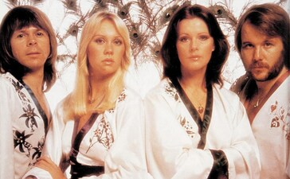
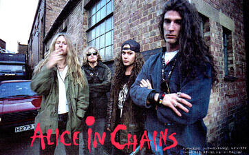
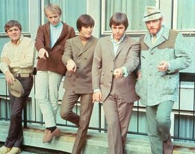
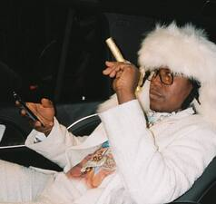
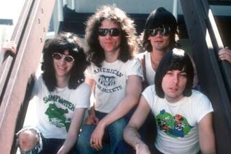
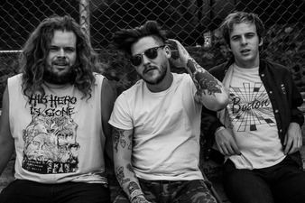

üéß Musical Interests üéß
üèÜ Salty's Top 10 Artists üèÜ
I cannot convey to y'all how hard it was to dial this down to 10 bands for length's sake... I ingest an unhealthy amount of music every year. I've written a little blurb about each artist on the list, as well as my personal choice of the artist's best album. I also listed my three favorite songs (including links to the music video or a live performance) from each artist if you want to give them a listen!

ü™© ABBA ü™©
Genre(s): Disco, Pop, Europop
Years Active: 1972-1982, 2016-Present
Best Album: Voulez-Vouz
Top 3 Songs: My Mama Said, Chiquitita (great song, weird as fuck video), Take A Chance On Me
Salty Says: If you don't know ABBA, then I guess you've been living under a rock. I mean, come on, it's ABBA. But seriously, I truly believe ABBA is the greatest pop band of all time. They did some amazing stuff recording- and production-wise in a pretty infantile time for synthesizers and electronic music in general. Their production masterpiece is a track called, "My Mama Said." Their live recordings are pretty damn good too for how demanding some of their songs are to perform.
⛓️ ALICE IN CHAINS ⛓️
Genre(s): Grunge, Alternative Metal, Rock
Years Active: 1987-2002, 2006-Present
Best Album: Dirt
Top 3 Songs: Would?, Heaven Beside You, Sludge Factory
Salty Says: I have pissed so many music snobs off with my opinion on AiC but here goes: Alice in Chains are THE greatest band of the grunge movement. Yes, better than Nirvana, Pearl Jam, Soundgarden, whatever... Jerry Cantrell writes the sickest, stickiest riffs that live in my brain forever. Both of the Mikes were great bassists that ripped so hard, Sean is a badass drummer, and there isn't a single vocalist who holds a candle to Layne Staley. I highly recommend listening to their first four albums all the way through.


üèÑ BEACH BOYS üèÑ
Genre(s): Surf Pop, Surf Rock, American Rock'N'Roll
Years Active: 1961-1997
Best Album: Pet Sounds
Top 3 Songs: I'm Waiting For The Day, Wendy, In My Room
Salty Says: I never understood the whole "Beach Boys versus The Beatles" thing that happens in critics' circles, really. They are totally different bands with different artistic goals, so if you've been turned away from them because of that, I would highly recommend giving them another try. Brian Wilson, as many before me have said, is a musical virtuoso. No one devised such monolithic, beautiful soundscapes before him in such a relatable and easily accessible way. Pet Sounds is my favorite album of all time; I never get tired of listening to it front-to-back. However, I do also love their goofy "Top 40" surf pop, too. Even the Christmas album is good, and I hate Christmas, damn it!
üåê BRONCHO üåê
Genre(s): Garage Rock, Indie Rock, Slacker Rock
Years Active: 2010-Present
Best Album: Double Vanity
Top 3 Songs: Highly Unintentional, Big City Boys, Fantasy Boys
Salty Says: Broncho is my favorite band of all time. They are criminally underrated and often only examined by their TV commercial song, "Class Historian." Don't get me wrong, that song is great and I'm glad it gives them some royalty income, but it does their artistic growth since 2010 a huge disservice. There is just something about their music that deeply resonates with me and just shatters my soul with each listen. I have seen Broncho many times live, chatted with them about their process, and am simply enamored by everything that they do. Double Vanity is tied with Pet Sounds for my favorite album of all time, but all of their albums are truly great. Ryan writes the most beautiful, haunting songs that I've ever heard in my life.

üíé DON TOLIVER üíé
Genre(s): Trap, R&B, PluggnB
Years Active: 2017-Present
Best Album: Heaven or Hell
Top 3 Songs: Backend, What You Need, Flocky Flocky
Salty Says: I listen to a lot of trap and pluggnB, and Don Toliver is the most refreshing artist I've heard come out of the genre in a long ass time. He has such a great voice and he commands AutoTune better than any other artist I've ever seen, even T-Pain and Travis. He writes the most beautiful vocal melodies, and I have loved every project he's done since I heard his "Donny Womack" mixtape back in 2018. If you like modern trap coupled with some snazzy, slick ass vocal melodies, then Don is your man.
üçÉ GREEN DAY üçÉ
Genre(s): Pop Punk, Skate Punk, Alternative Rock
Years Active: 1987-Present
Best Album: Nimrod
Top 3 Songs: Coming Clean, Prosthetic Head, Jaded
Salty Says: Green Day is the first band I ever loved. They taught me how to play the guitar, how to write a song, and how artists don't have to fit in one little box and stay there. Despite how you may feel about "pop punk" and that whole can of worms, we all have to give Green Day credit for initiating a huge movement of bringing punk sentiments to the mainstream and exposing a ton of people to their "true punk" influences. Nimrod absolutely blew my mind when I heard it for the first time, moreso than Dookie or Insomniac. It just felt so envelope-pushing and far out for a coked-out, queer punk band to produce. I really enjoy every single album up to 21st Century Breakdown, but anything after that is not really worth your time. I can't believe these bastards have been putting on shows since the '80s.. I saw them about a decade ago and they played for three hours straight; it was fucking awesome.

ü¶Ö RAMONES ü¶Ö
Genre(s): Punk Rock, Pop Punk
Years Active: 1974-1996
Best Album: Leave Home
Top 3 Songs: The KKK Took My Baby Away, Rockaway Beach, Oh, Oh, I Love Her So
Salty Says: I'll never forget the first time I put on the "Ramones Mania" CD my parents gave me. I was 6 or 7 at the time, and I vividly remember sitting on the floor in awed silence through the entire record. My parents are OG punk rockers of the late '80s, so they listened to a lot of "real" punk and hardcore in their day-to-day, but they never played anything like the Ramones before. I was completely enamored with their fusion of proto-punk, '60s rock-n-roll, and goofy, Beach Boys-esque harmonies. I knew from the second I heard the first few seconds of "I Wanna Be Sedated" that I wanted to learn the guitar and write songs just like the Ramones'. I was playing along to the whole album on my first guitar by the next year's Christmas.
ü™ï THE CHICKS ü™ï
Genre(s): Country, Bluegrass, Country Pop
Years Active: 1989-Present
Best Album: Home
Top 3 Songs: Hello, Mr. Heartache, Long Time Gone, Goodbye Earl
Salty Says: The Chicks (formerly the Dixie Chicks) are the most punk band to come out of the States since, well, forever. They have always been personally outspoken against assholes, and they are confident and masterful in their artistry despite working in a male-dominated, conservative genre. They are STILL banned from country radio because of the incident that happened in the early 2000s, but they continue to sell out shows across the world and are one of the best live bands, personally, that I've ever witnessed. There would be no Miranda Lambert or Taylor Swift without The Chicks. They are by far the best "country pop" act of the '90s and '00s, and their first two albums are solid all the way through. My personal favorite is their bluegrass masterpiece, "Home." Six-year-old me also thought Emily, the banjo player, was soooo hot.
üî• TRAVIS SCOTT üî•
Genre(s): Trap, Psychedelic Hip-Hop, Rap
Years Active: 2008-Present
Best Album: Astroworld
Top 3 Songs: CAN'T SAY, Coordinate, Way Back
Salty Says: Travis Scott is definitely my favorite rapper. Don't let his McDonald's meal and Fortnite concert fool you: this man means business when it comes to setting trajectories for what modern hip-hop sounds like. I love every single album he's released since Rodeo, and his mixtapes before that were good, too. I love his unconventional-turned-conventional, acid-trip take on modern trap. He's not afraid to use whatever whacky ass synth sound Mike Dean comes up with, and he is pretty good at picking features as well. I especially love the "Huncho Jack" collab between him and Migos (whose music I also love).
Despite his controversies and countless cash grabs (all billionaires are complete psychopaths; he is no exception), I truly love his music and artistic aesthetic. Astroworld is one of my favorite albums of all time, front-to-back.
üåä WAVVES üåä
Genre(s): Alternative Rock, Pop Punk, Lofi/Noise Rock, Indie Rock
Years Active: 2008-Present
Best Album: Afraid of Heights
Top 3 Songs: That's On Me, Linus Spacehead, Honeycomb
Salty Says: Wavves were such a great band to come out of the "pop-punk" answer to the whole Burger Records/DIY era of lofi rock coming out in the early 2010s. Their first couple releases are extremely blown out and lo-fi, but don't let that fool you. They really came into their own and recorded an absolute classic "post-tumblr stoner kid" album, "King of the Beach." If you like snotty, self-deprecating pop punk then Wavves is the band for you. "Afraid of Heights" is my favorite record from them; it is a lot more grunge and a big step up in production quality. Their newest records are also really good and deserve a listen. They're also a great live band; I've seen them 5 or 6 times at this point.
